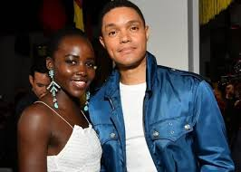

The auther of the book isTrevor Noah who was born and raised in South Africa
Trevor trys to explain how hard it was to grow up in a society where there was segrigation between the African race and the white race as a mixed race child.Trevor Noah explains all this in a very commedic and friendly way.
as mentioned above Trevor was born from parents with defferent races a South African mother and swiss father.Trevor was born during the time of apartheid in South Africa.
on 15th November 2016 he launched the book which became a new york times best seller
unlished "Son of patricia" a stand up comedy film which was grearly recieved
He hosts The daily show which popular in many countri.es
Is recognised as Africa's funniest cimmedian
in his 2016 memoir Born a Crime, comedian Trevor Noah recounts his childhood in South Africa under the apartheid government and the first few years of democratic rule by the nation’s black majority. Born in 1984 to a black Xhosa mother and a white Swiss expatriate father, Noah is not merely an anomaly in apartheid South Africa
News!!News!!News!!
There has been talks about making a movie based on the entire book!!
The movie will feature Hollywood's Icon actress Lupita Nyongo playing the role of Patricia Trevor's mum.
Lupita with Trevor